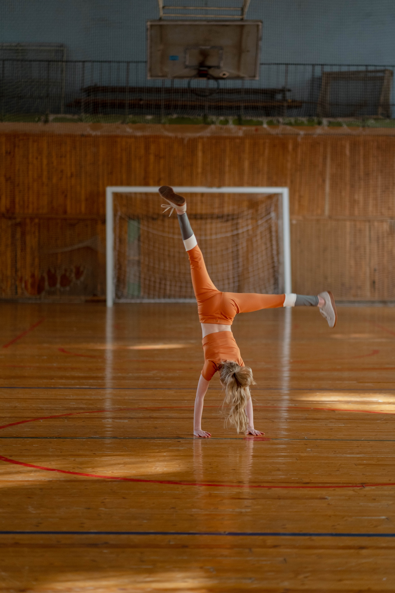

Es la capacidad de producir mediante el movimiento un ritmo externo o interno del ejecutante. La repetición regular o periódica de una estructura ordenada. Se habla de poseer un “sentido del ritmo”. En carreras como la maratón desarrollar esta capacidad es fundamental.
Es fundamental en varios deportes, como mencionamos anteriormente son importantes en carreras de larga distancia. En este contexto se refiere a la capacidad de mantener un ritmo constante y controlado durante toda la carrera.
En una maratón, es esencial tener un sentido del ritmo para poder distribuir adecuadamente la energía a lo largo de los 42.195 km de recorrido. Los corredores deben establecer un ritmo de carrera que les permita mantener una velocidad constante y sostenible evitando que se agoten prematuramente o se queden rezagados.
Mantener un ritmo constante en una maratón es importante por varias razones. En primer lugar, permite a los corredores mantener una eficiencia energética óptima, evitando una fatiga prematura y maximizando su rendimiento a lo largo de la carrera. Además, mantener un ritmo constante ayuda a una concentración mental adecuada y mantiene la motivación durante la competencia.
El ritmo también es importante en deportes, como el baile o la gimnasia rítmica, donde los movimientos deben realizarse en sincronía con la música. En estas disciplinas, el ritmo permite crear una armonía entre los movimientos corporales y el compás musical, añadiendo un componente estético y expresivo a la actuación.

Foto tomada de Pexels